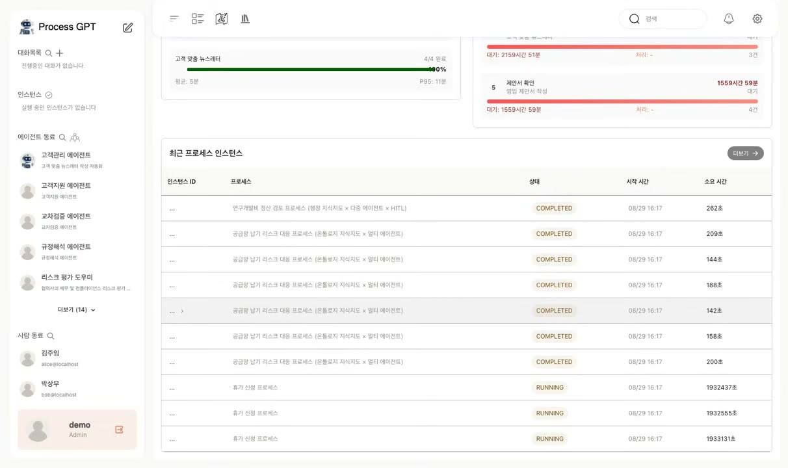
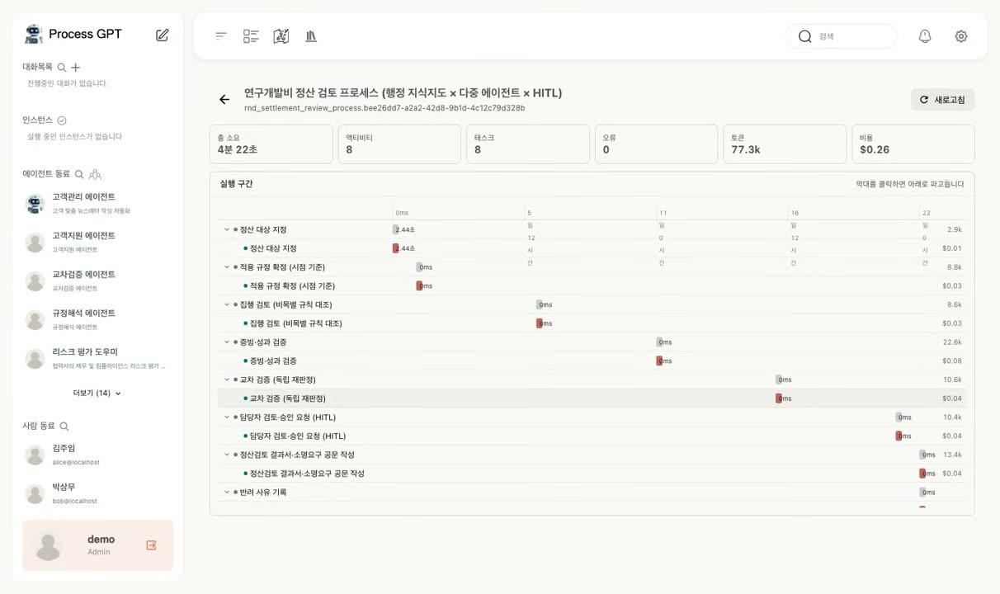
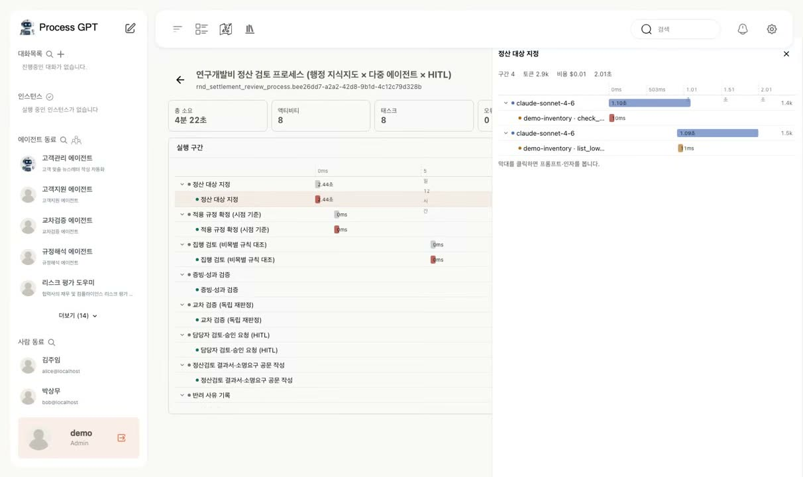
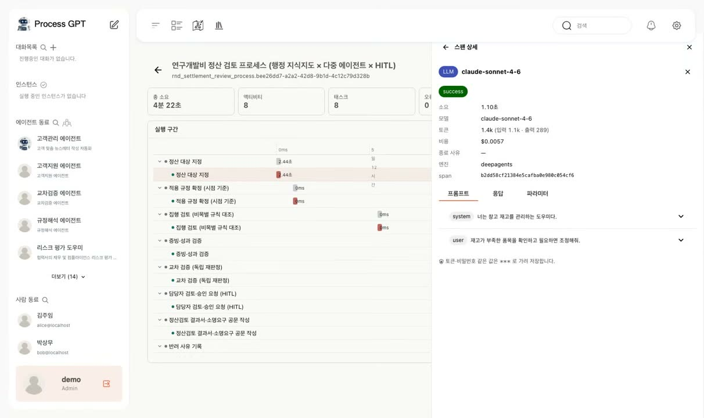
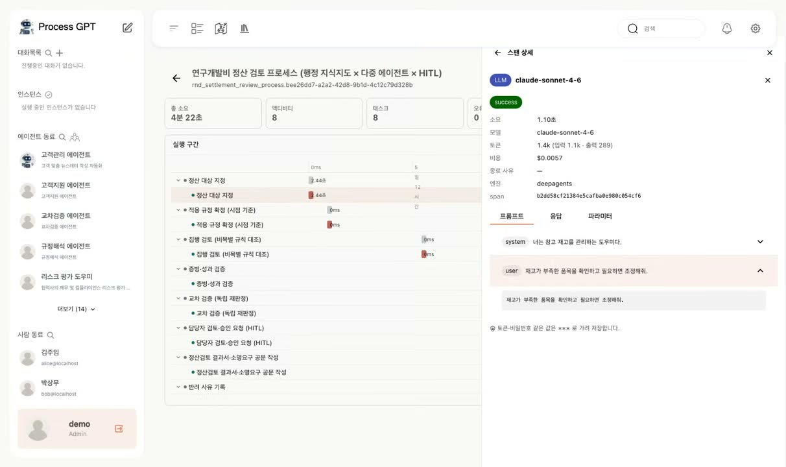
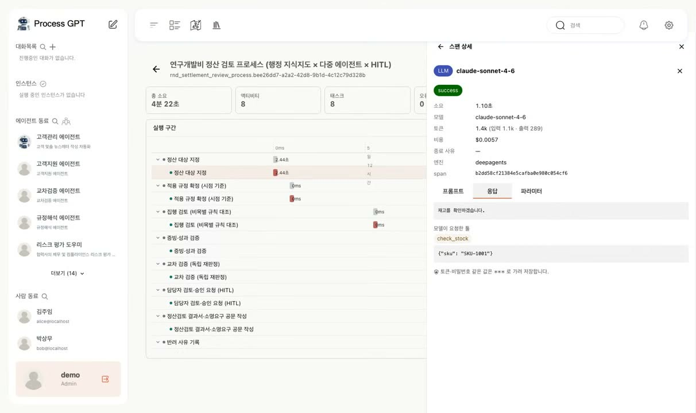
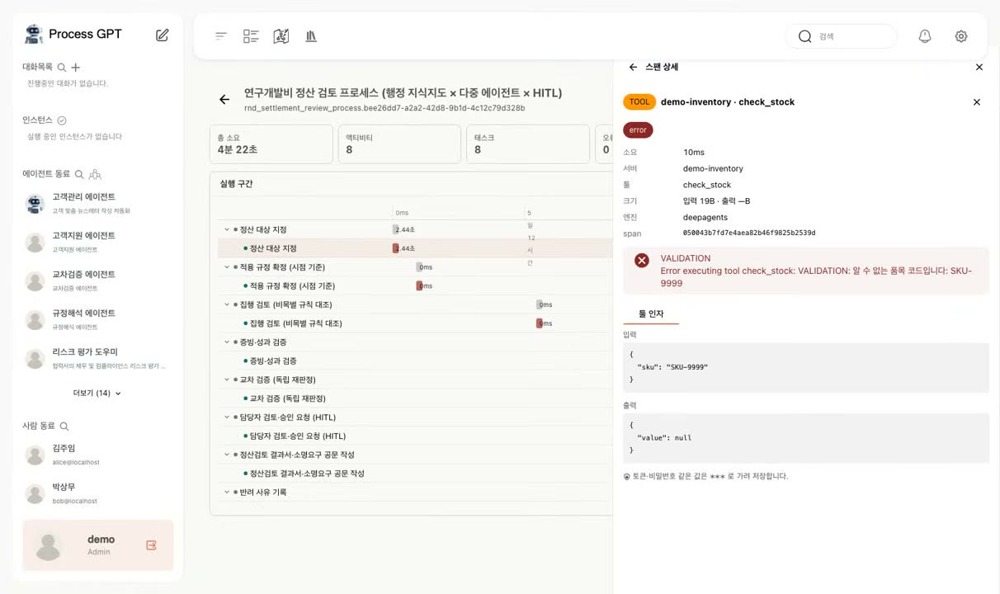
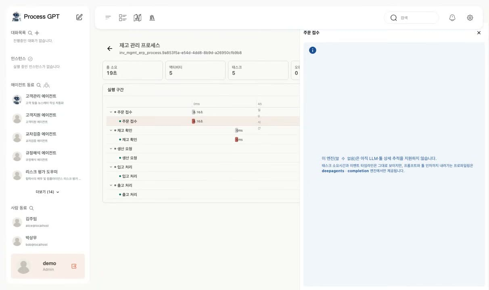

AI 에이전트의 실행 과정과 비용을 확인하는 실행 프로파일러
업무 한 건이 예상보다 오래 걸렸을 때, 전체 소요 시간만으로는 원인을 찾기 어렵습니다. 어느 작업에서 지연됐고, 그 안에서 어떤 호출이 실행됐는지 확인할 수 있어야 합니다.
AI 에이전트의 결과를 검토할 때도 실행 기록이 필요합니다. 모델에 전달한 입력, 호출한 도구, 도구가 반환한 결과를 함께 확인해야 처리 과정과 오류 원인을 살펴볼 수 있습니다.
Process GPT의 실행 프로파일러(Execution Profiler)는 업무 실행 건에서 개별 언어 모델·툴 호출까지 단계별로 확인하는 기능입니다. 처리 시간과 토큰 사용량, 비용을 업무별로 살펴볼 수 있습니다.
1. 업무 실행 건을 선택해 시간과 비용을 확인합니다
프로세스 분석 화면에서 인스턴스, 즉 업무 실행 한 건에 해당하는 행을 선택하면 실행 프로파일러가 열립니다. 상단에는 총 소요 시간, 토큰 사용량, 비용이 함께 표시됩니다.
아래의 워터폴 차트는 액티비티와 태스크를 시간 순서에 따라 막대로 보여 줍니다. 막대 길이로 각 구간의 경과 시간을 비교하고, 상세 확인이 필요한 작업을 찾을 수 있습니다.

프로세스 분석 목록에서 상세히 확인할 실행 건을 선택합니다.

시연 화면에는 총 소요 시간 4분 22초, 토큰 사용량 77.3k, 비용 $0.26이 표시됩니다. 아래 차트에서 작업별 실행 구간을 확인할 수 있습니다.
2. 태스크에서 언어 모델과 툴 호출까지 추적합니다
프로세스 인스턴스 → 태스크 → 언어 모델 호출 → 툴 호출 순서로 관련 기록을 확인합니다.
태스크 막대를 선택하면 해당 작업에서 발생한 언어 모델 호출이 펼쳐집니다. 각 언어 모델 호출 아래에는 그 응답에서 요청한 툴의 호출 기록이 연결됩니다.
이 연결은 실행 시 수집한 스팬(span), 즉 개별 호출의 추적 기록을 바탕으로 구성됩니다. 언어 모델 요청에 추적 기록을 만들고 관련 툴 호출을 연결하므로, 어떤 요청에서 어떤 도구가 호출됐는지 확인할 수 있습니다.
호출 상세 화면에서 확인할 정보
- 개요: 사용 모델, 소요 시간, 입력·출력 토큰 수, 비용을 확인합니다.
- 프롬프트 탭: 시스템 프롬프트와 사용자 지시 등 모델에 실제로 전달한 메시지를 역할별로 확인합니다.
- 응답 탭: 모델이 반환한 본문과 요청한 툴 이름, 입력 인자를 확인합니다.
- 툴 스팬: 툴에 전달된 입력값과 반환 결과를 확인합니다. 인증 토큰이나 비밀번호는 저장 단계에서 마스킹합니다.

태스크를 펼치면 언어 모델 호출과 관련 툴 호출이 계층 구조로 표시됩니다.
▶ 언어 모델 스팬 — 모델·시간·토큰 비용

개별 언어 모델 호출의 모델명, 소요 시간, 입력·출력 토큰과 비용을 확인합니다. 시연의 이 호출에는 $0.0057이 표시됩니다.
▶ 프롬프트 탭: 모델에 전달한 메시지

시스템 프롬프트부터 마지막 사용자 지시까지 모델에 전달한 메시지를 역할별로 확인합니다.
▶ 응답 탭 — 모델이 요청한 툴과 인자

모델의 응답 본문과 요청한 툴 이름·입력 인자를 함께 확인합니다.
▶ 툴 스팬: 입력값·반환 결과·오류

툴의 입력값과 반환 결과, 오류 내용을 확인합니다. 시연에서는 존재하지 않는 SKU를 조회해 VALIDATION 오류가 기록됐습니다.
3. 실행 엔진의 상세 추적 지원 여부를 표시합니다
제공되는 추적 정보는 실행 엔진에 따라 다릅니다. 상세 추적을 지원하지 않는 엔진에서는 지원 범위를 안내해, 기록이 누락된 것인지 기능이 지원되지 않는 것인지 구분할 수 있도록 합니다.
지원하지 않는 정보와 수집되지 않은 정보를 구분해야 운영자가 불필요한 오류 조사에 시간을 쓰지 않고 확인 가능한 범위를 파악할 수 있습니다.

상세 추적을 지원하지 않는 엔진에서는 ‘이 엔진은 상세 LLM 호출 정보를 제공하지 않습니다’라는 안내가 표시됩니다.
4. 호출 기록을 업무 정보와 함께 관리합니다
실행 프로파일러는 LLM 프록시와 이벤트 로그에서 수집한 정보를 활용합니다. 이 기록을 프로세스 인스턴스와 워크아이템에 연결해 기존 업무 분석 화면에서 확인할 수 있도록 구성했습니다.
담당자는 별도 화면에서 추적 ID와 업무 번호를 대조할 필요 없이 해당 실행 건의 기록을 바로 확인할 수 있습니다. 저장되는 원문은 민감한 값을 마스킹하며, 보관 기간이 지나면 자동으로 정리합니다.
| 운영 시 확인할 항목 | 실행 프로파일러의 제공 방식 |
|---|---|
| 호출 기록과 업무의 연결 | 프로세스 인스턴스·워크아이템에 추적 기록 연결 |
| 상세 기록으로 이동하는 방법 | 프로세스 분석 목록에서 실행 건을 선택해 확인 |
| 추적 데이터 수집 경로 | 기존 LLM 프록시와 이벤트 로그 활용 |
5. 결과 검토와 비용 분석에 활용합니다
에이전트를 업무에 활용하려면 담당자가 처리 결과를 검토할 수 있어야 합니다. 실행 프로파일러는 그 검토에 필요한 입력과 출력, 도구 호출 기록을 제공합니다.
어떤 프롬프트를 전달했고, 어떤 도구에 어떤 값을 입력했으며, 무엇을 반환받았는지 확인하면 오류 원인을 조사하거나 결과의 근거를 검토할 수 있습니다. 이 기록은 모델 내부의 사고 과정이 아니라 실제로 주고받은 메시지와 실행 내역입니다.
실행 건별 토큰 사용량과 비용은 자동화 운영비를 분석하는 데 활용할 수 있습니다. 다만 화면에 표시되는 토큰 비용은 전체 업무 비용의 일부이므로 인프라와 외부 서비스 비용 등은 별도로 고려해야 합니다.
Process GPT에서 확인하기
| 이 글의 개념 | Process GPT의 기능 |
|---|---|
| 에이전트의 입력·출력과 도구 호출 추적 | 멀티 에이전트 실행 계층에 스팬 계측 ↗ 소개 페이지에서 보기 |
| 실행 기록을 해당 업무와 연결 | BPMN 기반 프로세스 인스턴스·워크아이템 연결 ↗ 소개 페이지에서 보기 |
실행 프로파일러는 Process GPT 소개 페이지에서 전체 기능과 함께 확인할 수 있고, process-gpt.io에서 직접 사용해 볼 수 있습니다.